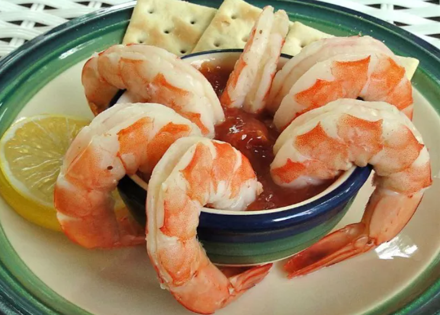

Chef John's Shrimp Cocktail

Cooking shrimp cocktail is easier than it may seem.
Before I knew much about food or dining out, I knew that if they brought shrimp cocktails to the table as an appetizer, we were eating at a "fancy" restaurant.
I'm sure I enjoyed the shrimp, but what I really loved was dipping the crackers in the spicy, horseradish-spiked cocktail sauce.
Ingredients:
Poaching Liquid:
- 3 quarts cold water
- ¼ onion, sliced
- ½ lemon
- 2 cloves garlic, peeled and bruised
- 2 sprigs fresh tarragon
- 1 tablespoon seafood seasoning (such as Old Bay®)
- 1 teaspoon whole black peppercorns
- 1 bay leaf
Cocktail Sauce:
- ½ cup ketchup
- ¼ cup chili sauce
- ¼ cup prepared horseradish
- 1 teaspoon lemon juice
- 1 teaspoon Worcestershire sauce
- 3 drops hot sauce, or to taste
- 1 pinch salt
Shrimp:
- 2 pounds shell-on deveined jumbo shrimp
Directions:
- For the poaching liquid: Stir water, onion, lemon, garlic, tarragon, seafood seasoning, peppercorns, and bay leaf together in a large pot; bring to a simmer and cook until flavors blend, about 15 minutes.
- For the cocktail sauce: Whisk ketchup, chili sauce, horseradish, lemon juice, Worcestershire sauce, hot sauce, and salt together in a bowl; refrigerate until chilled, at least 15 minutes.
- For the shrimp: Bring poaching liquid to a rapid boil. Cook shrimp in the boiling liquid until they are bright pink on the outside and the meat is no longer transparent in the center, about 5 minutes. Transfer shrimp to a bowl of ice water and immerse in ice water until cold; drain.
- Arrange cold shrimp on a platter and serve with chilled sauce.